Würfel-Rätsel
WÜRFEL
„Roll den Würfel. Nimm die Farben auf. Stempel sie ab.“
Ein Würfel steht auf einem kleinen Brett. Jeder Zug kippt ihn über eine Kante ins Nachbarfeld, und seine sechs Seiten wandern mit. Landet eine saubere Seite auf einem Farbfleck, nimmt sie die Farbe auf; auf einem Stempelfeld muss unten genau seine Farbe sein. Gelöst ist das Level, wenn alle Flecken aufgenommen, alle Stempel gesetzt sind und der Würfel im Ziel steht.
Später stapeln sich die Bretter zu bis zu drei Stockwerken: Durch ein Loch fällt der Würfel eine Ebene tiefer, ein Trampolin wirft ihn eine Ebene hoch, Portale verbinden Felder auch über Stockwerke hinweg. Die Kamera drehst du in Vierteln um das Brett, so siehst du jede Seite.
- Bald bei Google Play
- Bald im App Store
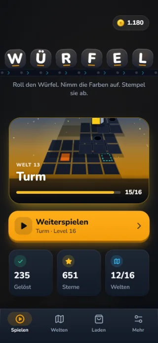
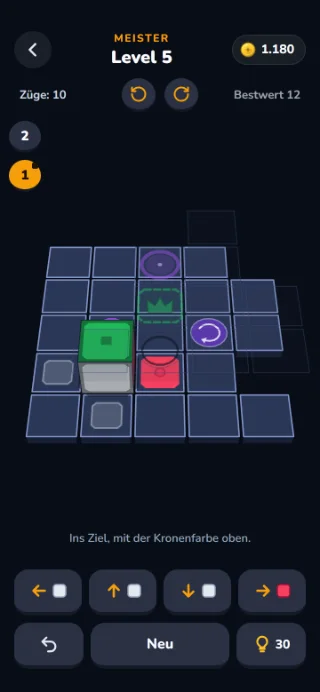
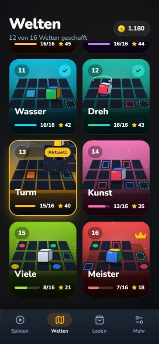
Screenshots aus der aktuellen Version von WÜRFEL
Video
WÜRFEL in Bewegung
So geht’s
Rollen, aufnehmen, stempeln
-
Rollen
Wisch über das Brett, tipp auf einen der vier Pfeile oder nimm die Pfeiltasten. Der Würfel kippt ein Feld weiter.
-
Aufnehmen
Landet eine saubere Seite auf einem Farbfleck, nimmt sie die Farbe auf. Schatten und Abdrücke zeigen dir, welche Seite wo landet.
-
Stempeln
Auf einem Stempelfeld muss unten seine Farbe sein. Sind alle Flecken weg und alle Stempel gesetzt, roll ins Ziel.
Bilder
Ein Blick ins Spiel
Zum Weiterblättern wischen oder scrollen.
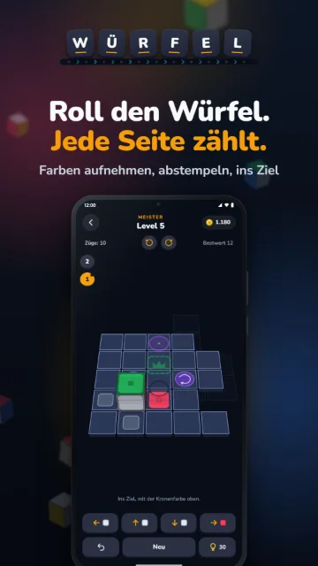
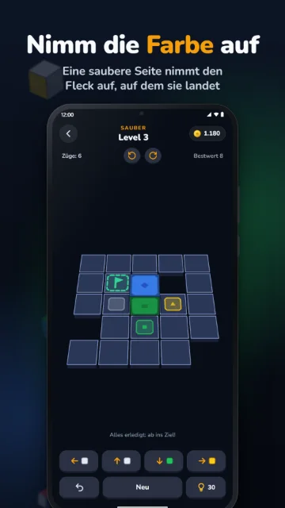
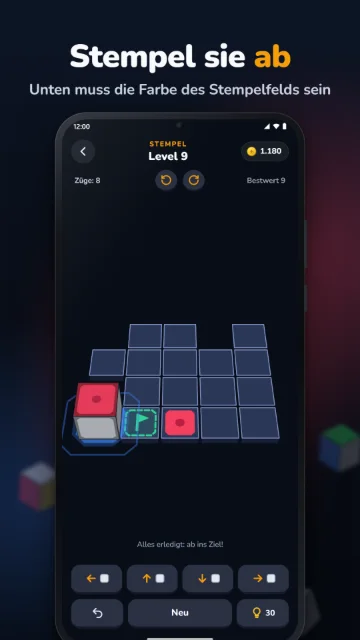
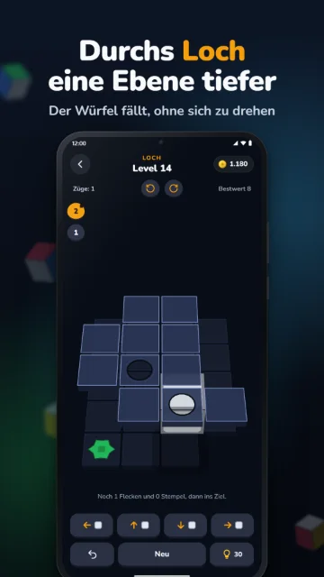
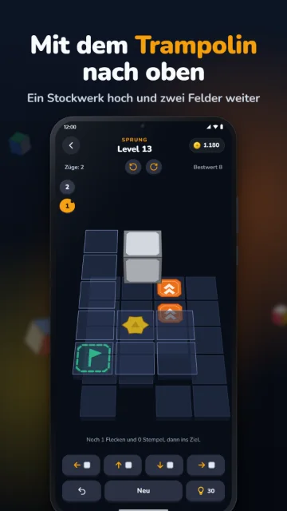
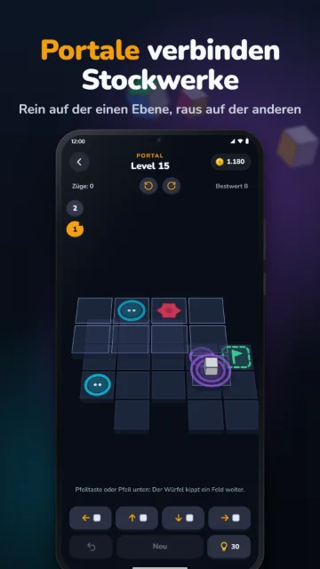
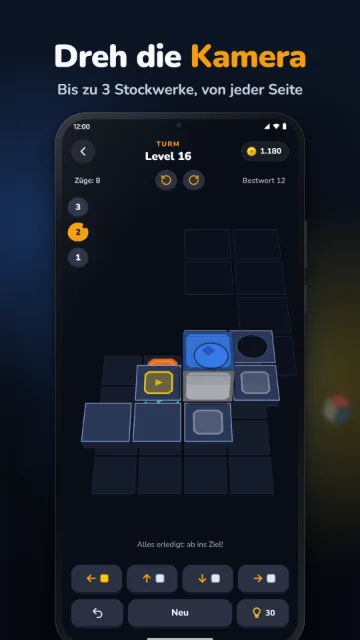
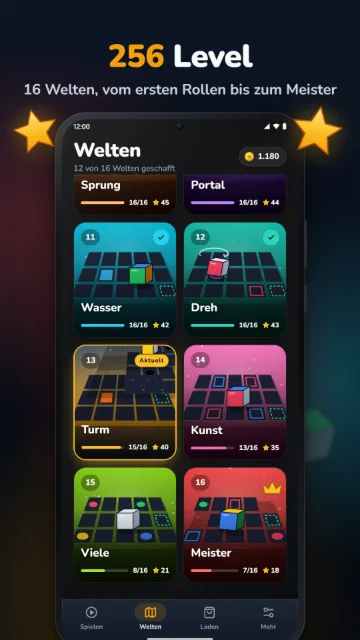
Bilder aus dem Store-Eintrag von WÜRFEL, aufgenommen in der aktuellen Version
Auf einen Blick
WÜRFEL in Zahlen
- 16Welten
- 256Level
- 3Stockwerke
- 0Zeitdruck
- 16 Welten, vom ersten Rollen über Flecken, Stempel und Kronen bis zum Meister.
- Echtes 3D: Der Würfel kippt sichtbar über die Kante, die Kamera dreht sich um das Brett.
- Löcher, Trampoline und Portale führen über bis zu drei Stockwerke.
- Waschbecken machen eine Seite wieder sauber, Drehteller drehen den Würfel auf der Stelle.
- Ein bewiesener Bestwert pro Level: Mit den wenigsten Zügen gibt es drei Sterne.
- Kein Glück, kein Zeitdruck: Jeder Zug rollt genau so, jedes Mal.
Welten
16 Welten mit je 16 Leveln
- RollenBis ins Ziel
- BuntFarbe abgeben
- FleckFarbe aufnehmen
- PaarZwei Flecken
- StempelErst holen, dann stempeln
- KroneFarbe nach oben
- SauberNur saubere Seiten
- LochEin Stockwerk tiefer
- SprungEin Stockwerk höher
- PortalHier rein, dort raus
- WasserWieder sauber
- DrehEine Vierteldrehung
- TurmDrei Stockwerke
- KunstBunt gestempelt
- VieleMehr Farbe als Seiten
- MeisterAlles zusammen